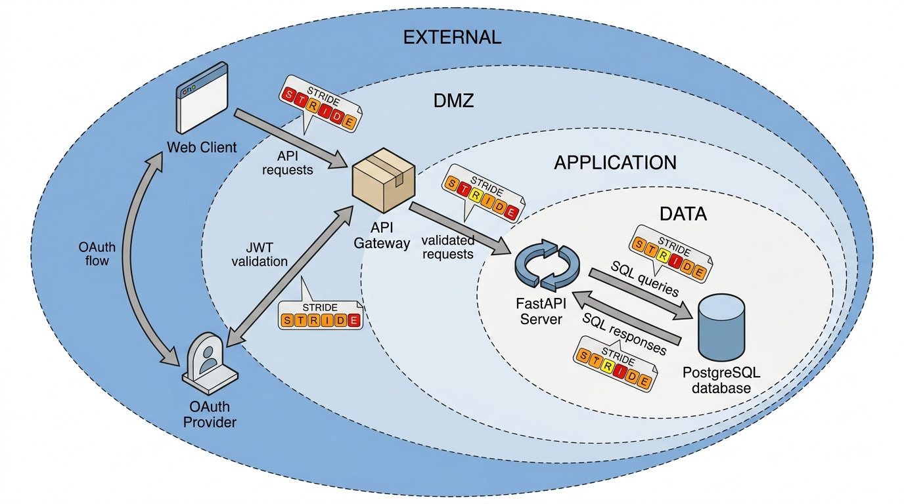

Prerequisites
This section opens Chapter 20. You should have completed Chapter 18: AI-Assisted Testing and QA, which introduced property-based testing and invariant discovery, and Chapter 14: Discovery of Architectures, which covered system decomposition and component diagrams. Familiarity with basic web application architecture (clients, servers, databases, authentication flows) is assumed.
Threat modeling is the practice of systematically asking "what could an adversary do to this system?" before they do it. It transforms security from a reactive discipline (patching vulnerabilities after discovery) into a proactive one (designing defenses before deployment). The key insight is that security analysis, like scientific discovery, benefits from structured enumeration. Just as a chemist uses the periodic table to ensure no element is overlooked, a security engineer uses frameworks like Spoofing, Tampering, Repudiation, Information disclosure, Denial of service, and Elevation of privilege (STRIDE) and attack trees to ensure no threat category is ignored. This section teaches you to build threat models by hand, then shows how AI accelerates the process by generating initial models from code and architecture descriptions.
1. Why Threat Modeling Comes First
What if the most dangerous vulnerability in your system is not a bug in any single line of code, but a question nobody thought to ask during design? That question separates teams who patch fires from teams who prevent them. Most security work happens too late: teams write code, deploy it, then run a vulnerability scanner and scramble to fix whatever it finds. This approach has two problems. First, the scanner only finds the vulnerability patterns it knows about; novel flaws slip through. Second, fixing vulnerabilities after deployment is expensive: studies such as NIST's cost-of-defect analyses suggest that a flaw caught during design can cost roughly an order of magnitude less to fix than one caught in production, though the exact ratio varies by project and organization. Threat modeling inverts this timeline by analyzing risks during design, when changes are cheap.
In 2017, the Equifax breach exposed the personal data of 147 million people, not because of a sophisticated zero-day exploit, but because a known vulnerability sat unpatched in a component no one had flagged as critical. A structured threat model would likely have identified that component's trust boundary and escalated its patch priority months earlier.
Threat modeling decomposes a system into its components, data flows (the connections carrying information between components), and trust boundaries (dividing lines between regions that operate at different privilege levels, defined formally in Section 3 below), then systematically enumerates the ways an adversary could abuse each element. It matters because it surfaces architectural vulnerabilities that no scanner or code review can detect: flaws that arise from how components interact rather than from any single line of code. You walk through every component and every data flow, applying a checklist of threat categories (such as STRIDE) to consider spoofing, tampering, information leakage, and other attack classes that teams routinely overlook. Use threat modeling during system design or before major architectural changes; for individual code-level bugs, static analysis tools and code review are more appropriate. In short: the most dangerous vulnerabilities live not in lines of code but in the gaps between components, and threat modeling is the only discipline that systematically searches those gaps.
Common Misconception
A widespread misconception is that threat modeling is a one-time activity performed during initial design and never revisited. In practice, a threat model must be updated whenever the architecture changes: adding a new microservice, integrating a third-party API, or migrating to a different cloud provider all introduce new trust boundaries and data flows that invalidate the original analysis.
The connection to discovery is direct. In Chapter 1, we defined discovery as search through a space of possibilities. Threat modeling is search through the space of possible attacks. The search space is defined by your system's architecture (its components, data flows, and trust boundaries), and the goal is to find attack paths that an adversary could exploit. A good threat model is a map of this space, and every security control you add narrows the regions where attacks can succeed.
To conduct that search effectively, you need a framework that converts the open question of "is this system secure?" into a finite set of concrete, answerable checks.
2. The STRIDE Framework
STRIDE is Microsoft's threat classification framework, introduced by Loren Kohnfelder and Praerit Garg in 1999 and refined by Adam Shostack into the standard methodology used across the industry. The acronym names six categories of threats, each paired with a security property it violates:
| Threat | Violated Property | Example |
|---|---|---|
| Spoofing | Authentication | Forging a JSON Web Token (JWT) to impersonate another user |
| Tampering | Integrity | Modifying a request body to change an order total |
| Repudiation | Non-repudiation | Deleting audit logs after performing a malicious action |
| Information Disclosure | Confidentiality | Leaking user emails through an unprotected API endpoint |
| Denial of Service | Availability | Sending oversized payloads that exhaust server memory |
| Elevation of Privilege | Authorization | Accessing admin endpoints with a regular user token |
The power of STRIDE is its breadth as a checklist: it covers the most common categories of software threats, though it does not address every possible risk (supply-chain attacks and privacy violations, for example, fall outside its scope). For every component in your system, you ask six questions: Can someone spoof its identity? Can they tamper with its data? Can they deny performing an action? Can they read data they should not? Can they make it unavailable? Can they gain privileges they should not have? Not every question will yield a real threat for every component, but the discipline of asking ensures you do not overlook an entire category.
STRIDE converts the open-ended question "is this system secure?" into six concrete, answerable sub-questions per component. This is the same decomposition strategy that Chapter 14 used for architecture discovery: break a complex problem into tractable pieces, solve each piece, then integrate the results. The threat model is to security what the architecture diagram is to design: a structured representation that makes implicit assumptions explicit.
3. Dataflow Diagrams and Trust Boundaries
STRIDE analysis begins with a dataflow diagram (DFD), where a DFD is a visual map of how data moves through a system's components. A DFD contains four types of elements: processes (code that transforms data), data stores (databases, files, caches), external entities (users, third-party services), and data flows (connections between elements). Over this diagram, you draw trust boundaries: lines separating regions with different privilege levels. Every data flow that crosses a trust boundary is a potential attack surface. Figure 20.1.1 illustrates dataflow diagram with trust boundaries and STRIDE analysis.

Mental Model
Think of trust boundaries like the security checkpoints in an airport. The public terminal lobby, the boarding gates past TSA screening, the airport tarmac, and the cockpit each represent zones with increasing privilege levels. Every person or piece of luggage that moves between zones must pass through a checkpoint where credentials are verified and contents inspected. A bag moving from the public curb to the tarmac without passing through the screening checkpoint is exactly analogous to an unauthenticated data flow crossing a trust boundary: it bypasses the controls designed to prevent dangerous payloads from reaching sensitive areas. Just as airport security focuses its resources on checkpoint thoroughness rather than patrolling every corridor, threat modeling focuses analysis on boundary-crossing flows rather than exhaustively examining every internal interaction.
The following DFD models a scientific data API, the kind of service the Discovery Workbench might expose for experiment result queries. The system has a web client, a FastAPI server, a PostgreSQL database, and an external authentication provider. Figure 20.1 illustrates this architecture, with dashed borders marking the four trust zones and arrows showing each data flow that crosses a boundary.
"""
Dataflow diagram representation for threat modeling.
We model the system as a graph of elements and flows,
then identify trust boundaries programmatically.
"""
from dataclasses import dataclass, field
from enum import Enum
from typing import Optional
class ElementType(Enum):
PROCESS = "process"
DATA_STORE = "data_store"
EXTERNAL_ENTITY = "external_entity"
class TrustZone(Enum):
EXTERNAL = "external" # Untrusted: users, public internet
DMZ = "dmz" # Semi-trusted: load balancers, API gateways
APPLICATION = "application" # Trusted: application servers
DATA = "data" # High-trust: databases, secret stores
@dataclass
class Element:
name: str
element_type: ElementType
trust_zone: TrustZone
description: str = ""
@dataclass
class DataFlow:
source: str # Element name
destination: str # Element name
data_description: str
protocol: str = "HTTPS"
authenticated: bool = False
encrypted: bool = True
def crosses_trust_boundary(
self, elements: dict[str, Element]
) -> bool:
"""A flow crosses a trust boundary when source and
destination are in different trust zones."""
src_zone = elements[self.source].trust_zone
dst_zone = elements[self.destination].trust_zone
return src_zone != dst_zone
@dataclass
class ThreatModel:
name: str
elements: dict[str, Element] = field(default_factory=dict)
flows: list[DataFlow] = field(default_factory=list)
def add_element(self, element: Element) -> None:
self.elements[element.name] = element
def add_flow(self, flow: DataFlow) -> None:
self.flows.append(flow)
def boundary_crossing_flows(self) -> list[DataFlow]:
"""Identify all flows that cross trust boundaries.
These are the primary attack surface."""
return [
f for f in self.flows
if f.crosses_trust_boundary(self.elements)
]
# Build the DFD for our scientific data API
model = ThreatModel(name="Discovery Workbench Data API")
model.add_element(Element(
"web_client", ElementType.EXTERNAL_ENTITY,
TrustZone.EXTERNAL, "Browser-based research dashboard"
))
model.add_element(Element(
"auth_provider", ElementType.EXTERNAL_ENTITY,
TrustZone.EXTERNAL, "OAuth2 identity provider (e.g., ORCID)"
))
model.add_element(Element(
"api_gateway", ElementType.PROCESS,
TrustZone.DMZ, "Rate limiting, TLS termination"
))
model.add_element(Element(
"fastapi_server", ElementType.PROCESS,
TrustZone.APPLICATION, "Core API: experiment queries, data export"
))
model.add_element(Element(
"postgres_db", ElementType.DATA_STORE,
TrustZone.DATA, "Experiment results, user profiles, audit logs"
))
model.add_flow(DataFlow(
"web_client", "api_gateway",
"API requests with bearer token",
authenticated=True
))
model.add_flow(DataFlow(
"api_gateway", "fastapi_server",
"Validated, rate-limited requests",
protocol="HTTP", encrypted=False # Internal network
))
model.add_flow(DataFlow(
"fastapi_server", "postgres_db",
"SQL queries with parameterized inputs",
protocol="PostgreSQL", authenticated=True
))
model.add_flow(DataFlow(
"web_client", "auth_provider",
"OAuth2 authorization code flow"
))
model.add_flow(DataFlow(
"auth_provider", "fastapi_server",
"JWT validation via JWKS endpoint"
))
# Find the attack surface
boundary_flows = model.boundary_crossing_flows()
print(f"Total flows: {len(model.flows)}")
print(f"Boundary-crossing flows: {len(boundary_flows)}")
for flow in boundary_flows:
src = model.elements[flow.source]
dst = model.elements[flow.destination]
print(f" {src.trust_zone.value} -> {dst.trust_zone.value}: "
f"{flow.source} -> {flow.destination}")
print(f" Data: {flow.data_description}")
print(f" Encrypted: {flow.encrypted}, "
f"Authenticated: {flow.authenticated}")
The output reveals that all five flows cross trust boundaries, but the most concerning are the unencrypted internal flow between the API gateway and the FastAPI server (vulnerable to network sniffing in shared hosting, as highlighted in red in Figure 20.1) and the database connection (where a compromised application server gains full data access). These crossing points become the focus of STRIDE analysis.
4. Applying STRIDE to Each Flow
STRIDE applies systematically to each boundary-crossing flow. The following code automates this analysis, generating a structured threat catalog:
"""
Automated STRIDE analysis for each boundary-crossing flow.
Generates a threat catalog with risk ratings.
"""
from dataclasses import dataclass
@dataclass
class Threat:
category: str # S, T, R, I, D, or E
flow_description: str
threat_description: str
severity: str # Critical, High, Medium, Low
mitigation: str
STRIDE_QUESTIONS = {
"S": "Can an attacker impersonate the {src} to the {dst}?",
"T": "Can an attacker modify data in transit from {src} to {dst}?",
"R": "Can {src} deny having sent data to {dst}?",
"I": "Can an attacker observe data flowing from {src} to {dst}?",
"D": "Can an attacker disrupt the flow from {src} to {dst}?",
"E": "Can {src} gain elevated privileges at {dst}?",
}
def stride_analysis(
flow: DataFlow, elements: dict[str, Element]
) -> list[Threat]:
"""Apply STRIDE to a single dataflow, generating threats
based on the flow's properties."""
threats = []
src = elements[flow.source]
dst = elements[flow.destination]
# Spoofing: unauth flows are vulnerable
if not flow.authenticated:
threats.append(Threat(
"S", f"{flow.source} -> {flow.destination}",
f"Attacker spoofs {src.name} identity to {dst.name} "
f"(no authentication on this flow)",
"High",
"Add mutual TLS or token-based authentication"
))
# Tampering: unencrypted flows are vulnerable
if not flow.encrypted:
threats.append(Threat(
"T", f"{flow.source} -> {flow.destination}",
f"Attacker modifies data between {src.name} and "
f"{dst.name} (unencrypted {flow.protocol})",
"High",
"Enable TLS encryption on internal network segment"
))
# Information Disclosure: unencrypted flows leak data
if not flow.encrypted:
threats.append(Threat(
"I", f"{flow.source} -> {flow.destination}",
f"Network observer reads {flow.data_description} "
f"in plaintext",
"High" if "token" in flow.data_description.lower()
else "Medium",
"Encrypt all inter-service communication"
))
# Denial of Service: external sources can flood
if src.trust_zone == TrustZone.EXTERNAL:
threats.append(Threat(
"D", f"{flow.source} -> {flow.destination}",
f"External entity {src.name} floods {dst.name} "
f"with requests",
"Medium",
"Implement rate limiting and request size caps"
))
# Elevation of Privilege: zone transitions
src_z = src.trust_zone.value
dst_z = dst.trust_zone.value
if (src.trust_zone in (TrustZone.EXTERNAL, TrustZone.DMZ)
and dst.trust_zone in (TrustZone.APPLICATION, TrustZone.DATA)):
threats.append(Threat(
"E", f"{flow.source} -> {flow.destination}",
f"Compromised {src.name} ({src_z}) accesses "
f"{dst.name} ({dst_z}) resources",
"Critical",
"Enforce principle of least privilege; "
"use service accounts with minimal permissions"
))
return threats
# Run STRIDE on all boundary-crossing flows
all_threats = []
for flow in model.boundary_crossing_flows():
flow_threats = stride_analysis(flow, model.elements)
all_threats.extend(flow_threats)
# Summary
print(f"\nThreat catalog: {len(all_threats)} threats identified")
for t in all_threats:
print(f" [{t.category}] {t.severity}: {t.threat_description}")
print(f" Mitigation: {t.mitigation}")
5. Attack Trees
Where STRIDE gives you a flat list of threats, attack trees give you a hierarchical view of how an attacker might achieve a specific goal. An attack tree is a rooted tree structure in which each node represents either an attacker objective or a concrete attack step, and branches decompose high-level goals into increasingly specific actions. An attack tree has a root node (the attacker's objective, such as "exfiltrate experiment data") and child nodes representing the steps or conditions needed to reach that objective. Children connected by AND gates require all sub-steps; children connected by OR gates require any one. Leaf nodes (the bottommost nodes in the tree, with no children of their own) are concrete attack actions with estimated cost, skill level, and probability of success.
Attack trees were formalized by Bruce Schneier in 1999 and connect to the search trees of Chapter 1. Just as a search algorithm explores a tree of possible states to find a goal state, an attacker explores a tree of possible actions to find an exploit path. Defense consists of pruning branches (making attack steps infeasible or expensive) until no viable path remains.
Checkpoint
So far: STRIDE gives you six threat categories to check per component, dataflow diagrams map your system's components and trust boundaries, and attack trees organize multi-step attack scenarios into hierarchical AND/OR structures that reveal the cheapest or easiest path an adversary can take.
"""
Attack tree construction and analysis.
Trees model hierarchical attack paths with AND/OR gates.
"""
from dataclasses import dataclass, field
from enum import Enum
from typing import Optional
class GateType(Enum):
OR = "or" # Any child suffices
AND = "and" # All children required
@dataclass
class AttackNode:
name: str
description: str
gate: GateType = GateType.OR
cost: Optional[float] = None # Estimated cost in USD
skill_level: Optional[str] = None # novice, intermediate, expert
mitigated: bool = False
children: list["AttackNode"] = field(default_factory=list)
def add_child(self, child: "AttackNode") -> "AttackNode":
self.children.append(child)
return child
def min_attack_cost(self) -> float:
"""Compute the minimum cost to reach this node.
OR gates: cheapest child path.
AND gates: sum of all child paths."""
if not self.children:
return float("inf") if self.mitigated else (self.cost or 0)
child_costs = [c.min_attack_cost() for c in self.children]
if self.gate == GateType.OR:
return min(child_costs)
else: # AND: attacker must succeed at all children
if any(c == float("inf") for c in child_costs):
return float("inf")
return sum(child_costs)
def viable_paths(self) -> list[list[str]]:
"""Enumerate all viable (non-mitigated) attack paths."""
if self.mitigated:
return []
if not self.children:
return [[self.name]]
if self.gate == GateType.OR:
paths = []
for child in self.children:
for path in child.viable_paths():
paths.append([self.name] + path)
return paths
else: # AND: combine paths from all children
from itertools import product
child_paths = [c.viable_paths() for c in self.children]
if any(len(p) == 0 for p in child_paths):
return [] # AND gate: all children must be viable
combined = []
for combo in product(*child_paths):
merged = [self.name]
for path in combo:
merged.extend(path)
combined.append(merged)
return combined
# Build an attack tree for data exfiltration
root = AttackNode(
"Exfiltrate experiment data",
"Attacker goal: steal proprietary research results"
)
# Path 1: SQL injection
sql_path = root.add_child(AttackNode(
"SQL injection", "Extract data via malicious SQL",
cost=100, skill_level="intermediate"
))
sql_path.add_child(AttackNode(
"Find unparameterized query",
"Locate endpoint using string concatenation for SQL",
cost=50, skill_level="intermediate"
))
sql_path.add_child(AttackNode(
"Craft UNION SELECT payload",
"Build payload to extract additional tables",
cost=50, skill_level="intermediate"
))
# Path 2: Authentication bypass
auth_path = root.add_child(AttackNode(
"Authentication bypass", "Access API without valid credentials",
gate=GateType.OR
))
auth_path.add_child(AttackNode(
"Steal JWT from XSS",
"Inject script to exfiltrate auth token",
cost=200, skill_level="intermediate"
))
auth_path.add_child(AttackNode(
"Brute-force weak credentials",
"Enumerate common passwords against login endpoint",
cost=50, skill_level="novice"
))
auth_path.add_child(AttackNode(
"Exploit JWT algorithm confusion",
"Switch RS256 to HS256 using public key as secret",
cost=300, skill_level="expert"
))
# Path 3: Insider threat (AND gate: needs access + exfil method)
insider_path = root.add_child(AttackNode(
"Insider data theft", "Authorized user exfiltrates data",
gate=GateType.AND
))
insider_path.add_child(AttackNode(
"Obtain legitimate access",
"Use valid researcher credentials",
cost=0, skill_level="novice"
))
insider_path.add_child(AttackNode(
"Bypass data-loss prevention",
"Evade download monitoring and DLP controls",
cost=100, skill_level="intermediate"
))
# Analysis
print(f"Minimum attack cost: ${root.min_attack_cost():.0f}")
print(f"\nViable attack paths ({len(root.viable_paths())}):")
for i, path in enumerate(root.viable_paths(), 1):
print(f" Path {i}: {' -> '.join(path)}")
The analysis reveals the cheapest attack path: brute-forcing weak credentials at an estimated \$50, requiring only novice skill, while the most sophisticated attack (JWT algorithm confusion) costs six times more and demands expert knowledge. This directs the first investments: strong password policies, login rate limiting, and multi-factor authentication (MFA), where a user must present two or more independent credentials (such as a password plus a one-time code) before gaining access. The attack tree makes that prioritization defensible with concrete numbers rather than intuition.
Consider a Discovery Workbench endpoint that controls a robotic plate reader. The STRIDE analysis reveals a critical elevation-of-privilege threat: if the API accepts unauthenticated commands, an attacker on the lab network could instruct the robot to dispense reagents incorrectly, contaminating experiments or wasting expensive materials. The attack tree shows that this path requires only network access (cost: \$0 if the attacker is on the same WiFi) and novice skill. The mitigation is straightforward: mutual TLS authentication, where both the client and server present certificates to verify each other's identity (unlike standard TLS, which only authenticates the server), between the API and the instrument controller, with a hardware security module storing the client certificate. This is the kind of threat that code review alone would never find, because the vulnerability is in the architecture, not the implementation.
6. AI-Assisted Threat Model Generation
Building a threat model by hand is thorough but slow. For a system with dozens of components and hundreds of flows, the combinatorial explosion of STRIDE questions becomes impractical. Because manually applying six STRIDE questions to every boundary-crossing flow scales quadratically with system size, AI assistance becomes valuable precisely where manual analysis hits diminishing returns. AI can accelerate this process by generating an initial threat model from code and architecture descriptions, which a security engineer then reviews and refines.
"""
AI-assisted threat model generation using an LLM.
The model analyzes source code and produces a structured
STRIDE threat catalog.
"""
import json
from anthropic import Anthropic
def generate_threat_model(
source_code: str,
architecture_description: str,
model: str = "claude-sonnet-4-20250514"
) -> dict:
"""Generate a STRIDE threat model from source code
and architecture description.
Returns a structured dict with elements, flows,
trust boundaries, and threats.
"""
client = Anthropic()
prompt = f"""You are a security architect performing threat modeling.
Analyze the following system and produce a STRIDE threat model.
ARCHITECTURE:
{architecture_description}
SOURCE CODE:
{source_code}
Return a JSON object with this structure:
{{
"elements": [
{{"name": "...", "type": "process|data_store|external_entity",
"trust_zone": "external|dmz|application|data",
"description": "..."}}
],
"flows": [
{{"source": "...", "destination": "...",
"data": "...", "protocol": "...",
"authenticated": true/false, "encrypted": true/false}}
],
"threats": [
{{"category": "S|T|R|I|D|E",
"target": "element or flow name",
"description": "...",
"severity": "Critical|High|Medium|Low",
"mitigation": "...",
"cwe_id": "CWE-NNN if applicable"}}
]
}}
Be specific about CWE IDs. Focus on threats relevant to
scientific data systems. Include at least one threat per
STRIDE category."""
message = client.messages.create(
model=model,
max_tokens=4096,
messages=[{"role": "user", "content": prompt}]
)
# Extract JSON from response
response_text = message.content[0].text
# Find JSON block in response
start = response_text.find("{")
end = response_text.rfind("}") + 1
return json.loads(response_text[start:end])
# Example: analyze a FastAPI application
fastapi_code = '''
from fastapi import FastAPI, Depends, HTTPException
from sqlalchemy.orm import Session
import subprocess
app = FastAPI()
@app.get("/experiments/{exp_id}")
def get_experiment(exp_id: str, db: Session = Depends(get_db)):
query = f"SELECT * FROM experiments WHERE id = '{exp_id}'"
result = db.execute(query) # SQL injection vulnerability
return result.fetchone()
@app.post("/analyze")
def run_analysis(command: str):
result = subprocess.run(
command, shell=True, capture_output=True # Command injection
)
return {"output": result.stdout.decode()}
'''
architecture = """
Web application with:
- FastAPI server (Python 3.11)
- PostgreSQL database for experiment data
- Endpoints for querying experiments and running analysis scripts
- OAuth2 authentication via ORCID
- Deployed on AWS ECS behind an ALB
"""
threat_model = generate_threat_model(fastapi_code, architecture)
print(json.dumps(threat_model, indent=2))
The LLM-generated model typically identifies the SQL injection (Common Weakness Enumeration (CWE) identifier CWE-89) in the
get_experiment endpoint and the command injection (CWE-78) in
run_analysis. It also tends to surface architectural threats invisible in the code alone: missing rate limiting on the Application Load Balancer (ALB) (denial of service), absent audit logging (repudiation), and potential Server-Side Request Forgery (SSRF), where an attacker tricks the server into making requests to internal services that should not be externally reachable, if analysis commands can reach
internal services. A security engineer should
review the generated model for false positives and add domain-specific threats (such as the reagent-dispensing
scenario above) that require physical-world knowledge the LLM lacks.
The pytm library from OWASP (the Open Worldwide Application Security Project, a nonprofit that publishes freely available security tools, standards, and guides)
lets you define threat models in Python and generates dataflow diagrams, STRIDE tables, and
reports automatically. What took us ~100 lines above, pytm handles in ~30 lines with its
TM, Server, Datastore, Dataflow, and
Boundary classes. It also includes a built-in threat database with hundreds of
pre-defined threats mapped to STRIDE categories. The trade-off: pytm's threat database is
static (it does not analyze your code for actual vulnerabilities), while our LLM-based
approach generates context-specific threats.
7. Quantifying Risk: The DREAD Model
STRIDE tells you what threats exist; you also need to decide which ones to fix first. The DREAD model scores each threat on five dimensions, each rated 1 to 10:
Damage (how bad is the impact?), Reproducibility (how reliably can the attack be repeated?), Exploitability (how much skill does the attack require?), Affected Users (how many users are impacted?), and Discoverability (how easy is the vulnerability to find?). The composite risk score is the average:
$$\text{DREAD} = \frac{D + R + E + A + Di}{5}$$Threats scoring above 7 are critical and demand immediate mitigation. Threats scoring 4 to 7 are high priority. Below 4, the risk may be acceptable depending on your threat tolerance. The quantitative framing makes prioritization discussions concrete: instead of arguing about whether SQL injection is "worse" than XSS, you compare their DREAD scores and allocate resources accordingly. (As of 2024, Microsoft itself has moved away from DREAD in favor of simplified bug-bar severity classifications and CVSS, the Common Vulnerability Scoring System, an industry-standard framework maintained by FIRST.org that rates vulnerability severity on a 0 to 10 scale using metrics such as attack vector, complexity, and impact; however, DREAD remains a useful teaching framework because its five dimensions make risk reasoning explicit and accessible.)
Scoring Threats with DREAD
"""
DREAD risk scoring for prioritizing threats.
"""
from dataclasses import dataclass
@dataclass
class DREADScore:
damage: int # 1-10: severity of successful attack
reproducibility: int # 1-10: ease of repeating the attack
exploitability: int # 1-10: ease of launching the attack
affected_users: int # 1-10: fraction of users impacted
discoverability: int # 1-10: ease of finding the vulnerability
@property
def score(self) -> float:
total = (self.damage + self.reproducibility +
self.exploitability + self.affected_users +
self.discoverability)
return total / 5.0
@property
def priority(self) -> str:
s = self.score
if s >= 7:
return "CRITICAL"
elif s >= 4:
return "HIGH"
else:
return "MEDIUM"
# Score the threats we identified earlier
threats_with_scores = [
("SQL injection in /experiments/{exp_id}",
DREADScore(9, 10, 7, 10, 8)), # 8.8 CRITICAL
("Command injection in /analyze",
DREADScore(10, 10, 6, 10, 6)), # 8.4 CRITICAL
("Missing rate limiting on ALB",
DREADScore(5, 10, 9, 10, 9)), # 8.6 CRITICAL
("No audit logging (repudiation)",
DREADScore(4, 10, 10, 5, 3)), # 6.4 HIGH
("JWT algorithm confusion",
DREADScore(9, 8, 3, 10, 4)), # 6.8 HIGH
]
print("Threat Prioritization (DREAD)")
print("-" * 60)
# Sort by score descending
for name, dread in sorted(
threats_with_scores, key=lambda x: x[1].score, reverse=True
):
print(f" [{dread.priority}] {dread.score:.1f} - {name}")
In 2024, Christoph Bommer and colleagues introduced ThreatModeling-LLM, a pipeline that feeds application source code and infrastructure-as-code definitions into GPT-4 to produce STRIDE threat catalogs automatically, reportedly achieving approximately 85% recall against human-authored threat models on a benchmark of 15 enterprise systems (published at the IEEE Symposium on Security and Privacy Workshops). Separately, Microsoft's Counterfit framework (open-sourced 2021, updated through 2024) applies adversarial ML testing to AI-specific threats that classical STRIDE does not cover, such as model inversion, training data extraction, and prompt injection. The frontier challenge is compositional threat reasoning: current LLMs typically analyze components individually but struggle to detect emergent vulnerabilities that arise only when two safe components interact, such as an authentication service and a caching layer whose combined behavior allows replay attacks.
Identifying and scoring threats, whether by hand or with AI assistance, is only half the job; the real payoff comes when those findings drive concrete engineering decisions.
8. From Threat Model to Security Requirements
A threat model is useful only if it produces actionable security requirements. Each threat in the catalog should map to a concrete control: a code change, a configuration setting, an architectural constraint, or a monitoring rule. The following process shows how to perform that mapping: for each threat whose DREAD score exceeds your threshold, express the mitigation as a testable requirement, classify it by the type of test that can verify it, and determine whether that test can run automatically in a CI/CD pipeline.
"""
Converting threat model findings into testable security
requirements that integrate with the CI/CD pipeline.
"""
def threats_to_requirements(
threats: list[tuple[str, DREADScore, str]],
threshold: float = 4.0
) -> list[dict]:
"""Convert scored threats into testable security requirements.
Args:
threats: List of (name, dread_score, mitigation) tuples
threshold: Minimum DREAD score to generate a requirement
Returns:
List of requirement dicts with test criteria
"""
requirements = []
for name, dread, mitigation in threats:
if dread.score < threshold:
continue
requirements.append({
"id": f"SEC-{len(requirements)+1:03d}",
"threat": name,
"dread_score": dread.score,
"priority": dread.priority,
"requirement": mitigation,
"test_type": classify_test_type(mitigation),
"automated": can_automate(mitigation),
})
return requirements
def classify_test_type(mitigation: str) -> str:
"""Determine appropriate test type for a mitigation."""
keywords = mitigation.lower()
if any(w in keywords for w in ["parameterize", "inject", "sanitize"]):
return "SAST + unit test"
elif any(w in keywords for w in ["rate limit", "timeout"]):
return "integration test"
elif any(w in keywords for w in ["encrypt", "tls"]):
return "configuration audit"
elif any(w in keywords for w in ["log", "audit"]):
return "integration test"
else:
return "manual review"
def can_automate(mitigation: str) -> bool:
"""Check if the mitigation test can run in CI/CD."""
manual_keywords = ["physical", "manual", "review", "training"]
return not any(
w in mitigation.lower() for w in manual_keywords
)
# Generate requirements from our threat catalog
threat_data = [
("SQL injection", DREADScore(9, 10, 7, 10, 8),
"Use parameterized queries for all database access"),
("Command injection", DREADScore(10, 10, 6, 10, 6),
"Sanitize inputs and use subprocess with shell=False"),
("Missing rate limiting", DREADScore(5, 10, 9, 10, 9),
"Add rate limiting middleware with 100 req/min per IP"),
("No audit logging", DREADScore(4, 10, 10, 5, 3),
"Log all data access with user ID and timestamp"),
]
reqs = threats_to_requirements(threat_data)
for req in reqs:
print(f"{req['id']} [{req['priority']}] {req['threat']}")
print(f" Requirement: {req['requirement']}")
print(f" Test type: {req['test_type']}")
print(f" Automated: {req['automated']}")
These requirements become inputs to the security review pipeline in Section 20.3, where automated scanners verify that each mitigation is correctly implemented and regression tests ensure it stays that way.
According to reports from the European Southern Observatory, in 2023 a team performed STRIDE analysis on the control software for the Extremely Large Telescope. They discovered that the instrument configuration API accepted unsigned commands over an unencrypted internal bus. An attacker with physical access to the observatory network could have repositioned mirror segments, potentially causing millions of euros in damage. The threat model cost two days of engineering time. The fix (mutual TLS on the command bus) cost a week. The telescope mirror it protected costs over 100 million euros. That is the ROI of threat modeling.
Try It: Build a Threat Model for a Flask To-Do App
Complete this mini-project using only Python and its standard library (plus Flask, which
installs with pip install flask):
1. Create a minimal Flask app with three routes: /login (accepts username
and password via POST), /todos (returns a JSON list of to-do items stored in
a SQLite database), and /todos/add (inserts a new item). Deliberately use
string formatting for the SQL insert to introduce a vulnerability.
2. Using the ThreatModel class from Listing 20.1 as a starting point, define
the DFD for your app: a browser (external entity), the Flask process (application zone),
and the SQLite file (data zone). Add the three data flows (browser to Flask, Flask to
SQLite, and the login credential flow). Call boundary_crossing_flows() and
print the results.
3. Apply the stride_analysis() function from Listing 20.2 to each
boundary-crossing flow. Examine the generated threat catalog and confirm that it flags
the SQL injection you introduced.
4. Score each threat using the DREADScore class from Listing 20.5. Rank them
and identify which threat scores highest. Fix the top-scoring vulnerability by switching
to parameterized queries (cursor.execute("INSERT INTO todos VALUES (?)", (item,))).
5. Re-run the STRIDE analysis on the updated code. Verify that the SQL injection threat no longer applies, and write a one-paragraph summary of how the threat model guided your remediation priority.
Exercise 20.1.1
Consider a system with three components: a mobile app (external zone), a REST API server (application zone), and a Redis cache (data zone). The mobile app sends JSON requests to the API over HTTPS with a bearer token. The API reads from and writes to Redis over an unencrypted TCP connection without authentication. List every STRIDE category that applies to the API-to-Redis flow, and for each one, write a single sentence describing the concrete threat.
Hint
The flow is unencrypted and unauthenticated, which directly enables three STRIDE categories (Spoofing, Tampering, Information Disclosure). For the remaining categories, ask: can an attacker flood Redis through the API (Denial of Service)? Can the API deny having written a cache entry if there are no logs (Repudiation)? Can a compromised API use the unauthenticated Redis connection to execute arbitrary commands like FLUSHALL or CONFIG SET (Elevation of Privilege)?
Step-Through: DREAD Scoring for Two Competing Threats
Trace through the DREAD formula with two concrete threats from a lab data portal:
Threat A: Stored Cross-Site Scripting (XSS) in experiment notes field. Damage = 6 (session hijacking of other researchers), Reproducibility = 9 (just submit a note containing a script tag), Exploitability = 7 (basic HTML/JS knowledge), Affected Users = 8 (every researcher who views the note), Discoverability = 7 (visible in any form field test). Score = (6 + 9 + 7 + 8 + 7) / 5 = 37 / 5 = 7.4 (CRITICAL).
Threat B: Timing side-channel in password comparison. Damage = 8 (full account takeover), Reproducibility = 4 (requires many precisely timed requests), Exploitability = 3 (needs statistical analysis of response times), Affected Users = 5 (one account at a time), Discoverability = 3 (requires specialized tooling to detect). Score = (8 + 4 + 3 + 5 + 3) / 5 = 23 / 5 = 4.6 (HIGH).
Despite Threat B having higher damage potential, Threat A scores higher overall because it is far easier to exploit, reproduce, and discover. DREAD correctly prioritizes the XSS fix first: patch the input sanitization before investing in constant-time comparison.
Real-World Application: Microsoft SDL Threat Modeling
Microsoft's Security Development Lifecycle (SDL), a company-wide process that embeds security practices (threat modeling, code review, fuzz testing) into every phase of software development, requires every product team to produce a STRIDE threat model before code review. The Windows team uses the Microsoft Threat Modeling Tool to generate DFDs from architecture templates, automatically flag trust boundary crossings, and track mitigations as work items in Azure DevOps. (As of 2025, Microsoft also offers an AI-driven threat modeling copilot integrated into the Security Development Lifecycle, supplementing the standalone desktop tool with LLM-generated threat suggestions.) Since SDL adoption in 2004, Microsoft has credited the practice with reducing the severity and count of security bulletins across Windows and Office by over 50% in the first three years of mandatory use.
Lab: Automated STRIDE Analysis with pytm
Goal: Use the OWASP pytm library to generate a complete STRIDE threat report for a three-tier web application in under 30 minutes.
Tools needed: Python 3.9+, pip install pytm, and Graphviz
(for DFD rendering). Optionally, install plantuml for sequence diagrams.
Procedure: Define a ThreatModel with a Server (Flask app),
a Datastore (PostgreSQL), an Actor (browser user), and a
ExternalEntity (OAuth provider, where OAuth is an open authorization standard that lets users grant third-party applications limited access to their accounts without sharing passwords). Add Dataflow objects between
them and place Boundary objects at trust transitions. Call
tm.process() to generate the DFD image and the threat report.
What to vary: Toggle the isEncrypted and
isAuthenticated properties on each Dataflow and re-run the report. Observe
how the number of generated threats changes. Add a second data store (a Redis cache in the
application zone with no authentication) and note which new threats appear.
What to observe: Count the total threats per STRIDE category. Identify which trust-boundary crossing produces the most threats. Compare pytm's static threat database output against the LLM-generated threats from Listing 20.4 for the same architecture: which approach finds threats the other misses?
Exercises
Exercise 20.1.1 (Conceptual): A Discovery Workbench plugin lets researchers upload Jupyter notebooks for server-side execution. Draw a dataflow diagram with trust boundaries and apply STRIDE to each boundary-crossing flow. Which STRIDE category produces the most critical threat, and why?
Exercise 20.1.2 (Coding):
Extend the AttackNode class to support a time_to_exploit field
(in hours). Implement a fastest_path() method that returns the attack path
with the shortest total time, respecting AND/OR gate semantics. Test it on the data
exfiltration tree from Listing 20.3.
Exercise 20.1.3 (Analysis): Compare DREAD scoring with the Common Vulnerability Scoring System (CVSS) v4.0. What dimensions does CVSS include that DREAD omits? When would you prefer one over the other for prioritizing threats in a scientific computing environment?